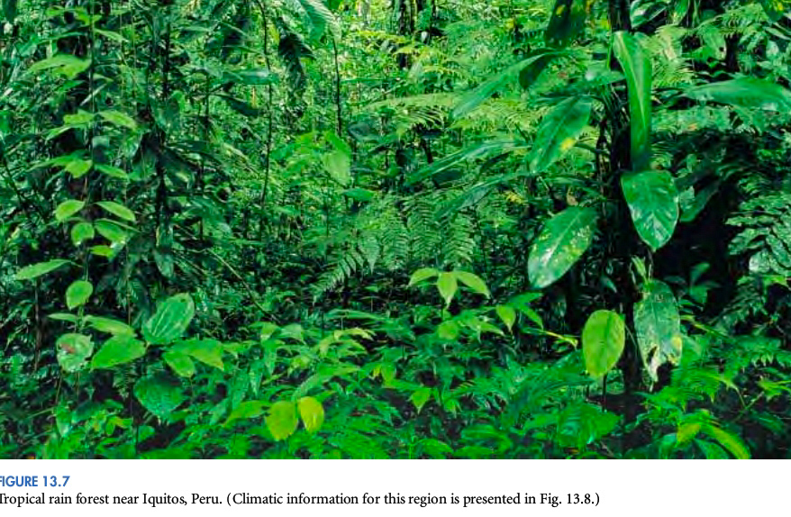
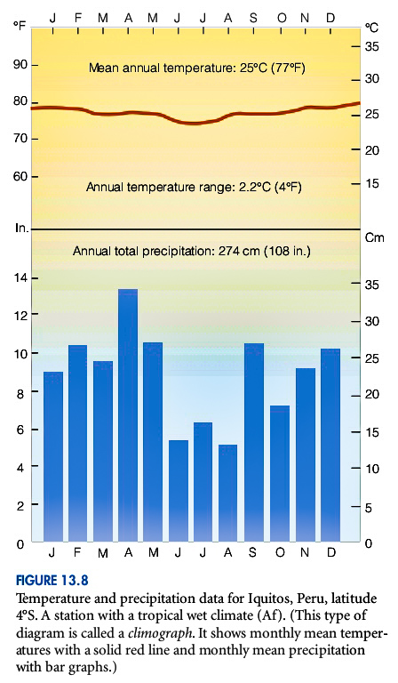
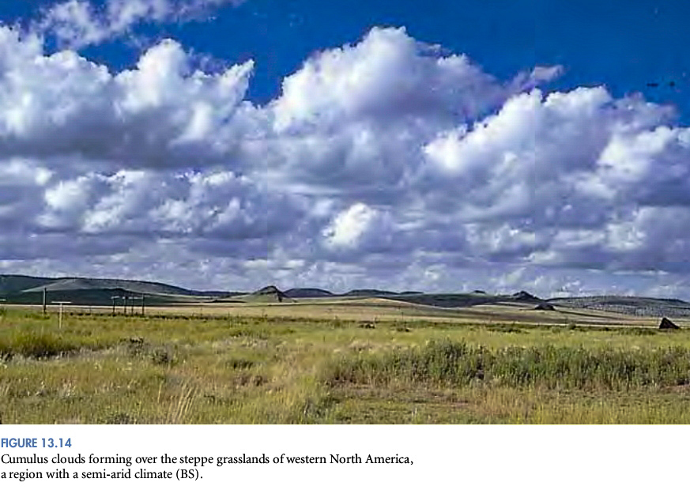
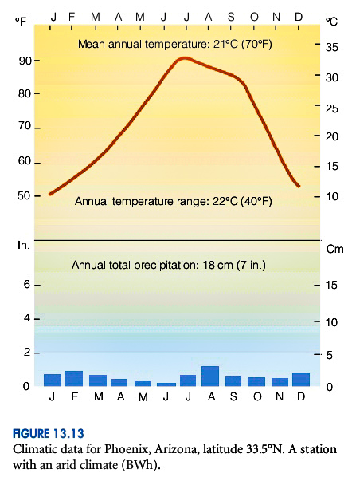
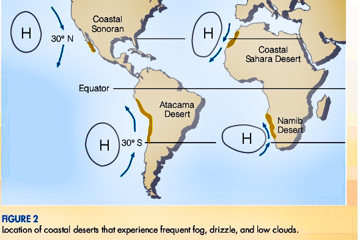
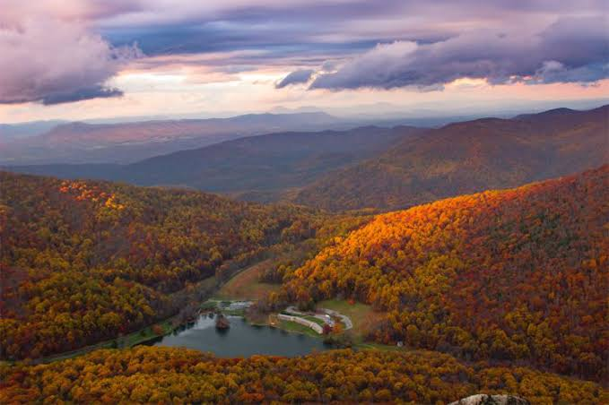
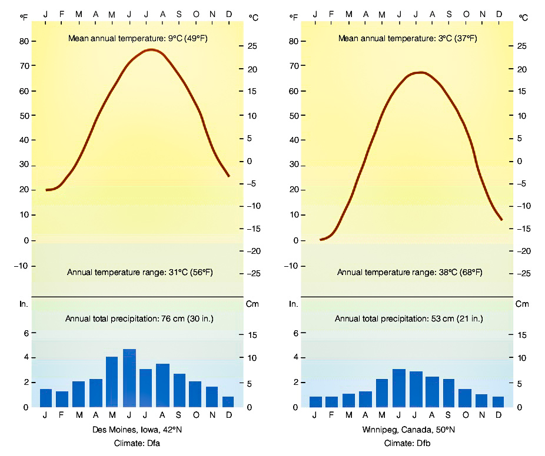
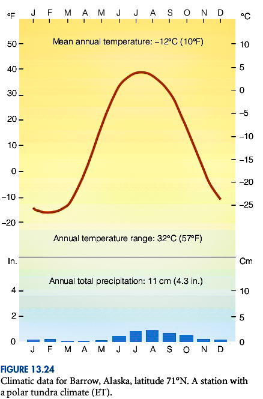
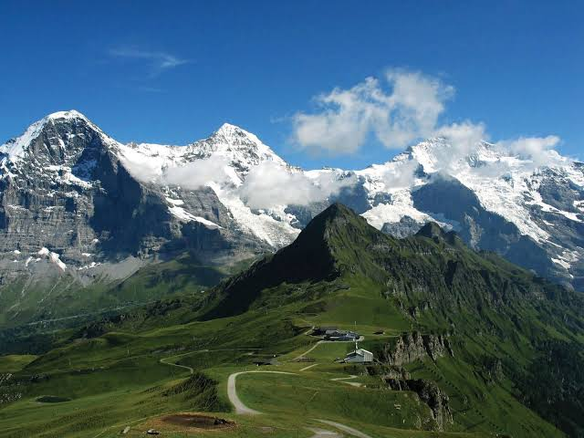

Back

The global pattern of climate refers to the distribution of different climate types across the Earth’s
surface.
The global climate can be broadly classified into several major types based on temperature, precipitation, and other climatic characteristics. Here are some of the main types of global climate:
The global climate can be broadly classified into several major types based on temperature, precipitation, and other climatic characteristics. Here are some of the main types of global climate:
TROPICAL MOIST CLIMATE

General characteristics: year-round warm temperatures (all months have a mean temperature above
18°C, or 64°F); abundant rainfall (typical annual average exceeds 150 cm, or 59 in.).

Extent: northward and southward from the equator to about latitude 15° to 25°.
Major types (based on seasonal distribution of rainfall): Tropical rainforest (Af), tropical monsoon (Am), and ropical Wet and dry (Aw).
Major types (based on seasonal distribution of rainfall): Tropical rainforest (Af), tropical monsoon (Am), and ropical Wet and dry (Aw).
DRY CLIMATES

General characteristics: deficient precipitation most of the year; potential evaporation and
transpiration exceed precipitation.

Extent: the subtropical deserts extend from roughly 20° to 30° latitude in large continental regions of
the middle latitudes, often surrounded by mountains.
Major types: arid (BW) the “true desert”— Hot Desert (BWh), Cold Desert (BWk), and semiarid (BS) - Hot Semiarid (BSh) and Cold Semiarid (BSk) .
Did you know???
The driest major city in the contiguous United States is Yuma, Arizona. Yuma has a total average annual precipitation of 6.5 cm (2.6 in.)—it rains there only about 17 days a year.
Major types: arid (BW) the “true desert”— Hot Desert (BWh), Cold Desert (BWk), and semiarid (BS) - Hot Semiarid (BSh) and Cold Semiarid (BSk) .
Did you know???
The driest major city in the contiguous United States is Yuma, Arizona. Yuma has a total average annual precipitation of 6.5 cm (2.6 in.)—it rains there only about 17 days a year.
Desert with clouds and drizzle
It refers to the occurrence of clouds and light rain in an otherwise arid desert environment. It is a rare and fascinating phenomenon that brings moisture to typically dry regions.
It refers to the occurrence of clouds and light rain in an otherwise arid desert environment. It is a rare and fascinating phenomenon that brings moisture to typically dry regions.

MOIST SUBTROPICAL MID-LATITUDE CLIMATES
General characteristics: humid with mild winters (i.e., average temperature of the coldest month
below 18°C, or 64°F, and above ‒3°C, or 27°F).
Extent: on the eastern and western regions of most continents, from about 25° to 40° latitude.
Major types: humid subtropical (Cfa) ,marine (Cfb), and dry-summer subtropical, or Mediterranean (s).
Major types: humid subtropical (Cfa) ,marine (Cfb), and dry-summer subtropical, or Mediterranean (s).
MOIST CONTINENTAL CLIMATES

General characteristics: warm-to-cool summers and cold winters (i.e., average temperature of
warmest month exceeds 10°C, or 50°F, and the coldest monthly average drops below ‒3°C, or 27°F);
winters are severe with snowstorms, blustery winds, bitter cold; climate controlled by large continent.

Extent: north of moist subtropical mid-latitude climates.
Major types: humid continental with hot summers (Dfa), humid continental with cool summers (Dfb) , and subpolar (Dfc) .
Major types: humid continental with hot summers (Dfa), humid continental with cool summers (Dfb) , and subpolar (Dfc) .
POLAR CLIMATES
General characteristics: year-round low temperatures (i.e., average temperature of the warmest
month is below 10°C, or 50°F).

Extent: northern coastal areas of North America and Eurasia; Greenland and Antarctica.
Major types: polar tundra (ET) and polar ice caps (EF).
Major types: polar tundra (ET) and polar ice caps (EF).
HIGHLAND CLIMATES

Highland climates, categorized under Group H in the Köppen climate classification system, refer to
climates found in mountainous or high-elevation regions.
General Characteristics:
- Highland climates are influenced by elevation, topography, and local weather patterns, rather than solely by latitude.
- Temperatures tend to decrease with increasing altitude, resulting in cooler conditions compared to nearby lowland areas.
- Precipitation patterns can vary widely, with some highland areas experiencing high rainfall or snowfall due to orographic lifting, while others may be relatively dry.
Extent:
- Highland climates can be found in mountainous regions across the globe.
- They are not limited to specific latitudes but are determined by the presence of significant variations in elevation.
General Characteristics:
- Highland climates are influenced by elevation, topography, and local weather patterns, rather than solely by latitude.
- Temperatures tend to decrease with increasing altitude, resulting in cooler conditions compared to nearby lowland areas.
- Precipitation patterns can vary widely, with some highland areas experiencing high rainfall or snowfall due to orographic lifting, while others may be relatively dry.
Extent:
- Highland climates can be found in mountainous regions across the globe.
- They are not limited to specific latitudes but are determined by the presence of significant variations in elevation.